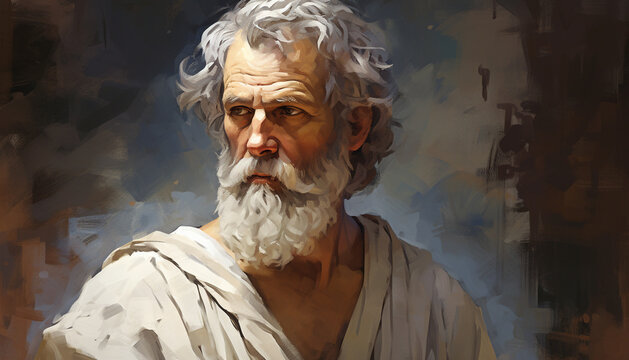

We believe that philosophy is an art form. Philosophy helps people change their mindsets. Our perception of how good our life is, is dependent on our mindset. Science is one means of finding the truth. The process of science is to find truth through observation. The process of philosophy is to find truth through dialogue, & critical thinking.
We decided to include a lot of wise quotes without analyzing them. This is because we want the wisdom to speak for it's self. Let the wise quotes be something you meditate on.
Other Philosophy Websites I Recommend:
einzelganger.com
dailystoic.com
2023 Philosophy World